当世界越来越容易抵达，
纯粹的荒野反而成了最奢侈的礼物。
这不是一次巡航。
这是一场独家订制的家族远征，
一曲挚友共赴的静默史诗。
艾奇冰川（Eqi）历来繁忙。
其实它边上那些小峡湾，也有冰川，
只是少有人至罢了。
比如面前这个南冰川（Sermeq），我觉得也挺美，完全不输。
睡了。
半夜，船轻轻地晃啊晃。迷迷糊糊的，像是梦。
职业警觉，还是起了身
——水平如镜，无风无浪。
"果然是梦。"
这峡湾窄得可以游上岸，哪会有什么晃呢？
正想着，船晃了起来
——原来是冰川在崩裂。
原来冰崩不总是白日喧闹里哗啦啦的一大片。
有时，它悄然发生，
只留给夜泊者一人听见。
月牙儿碎在海面，仿佛狡黠地眨了眼。
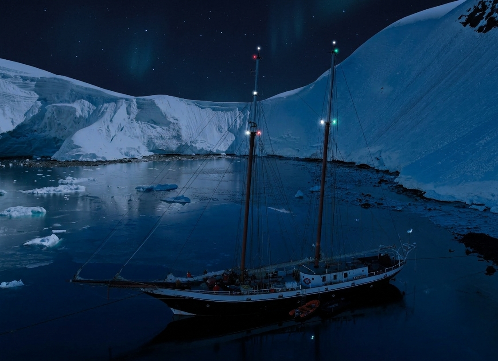
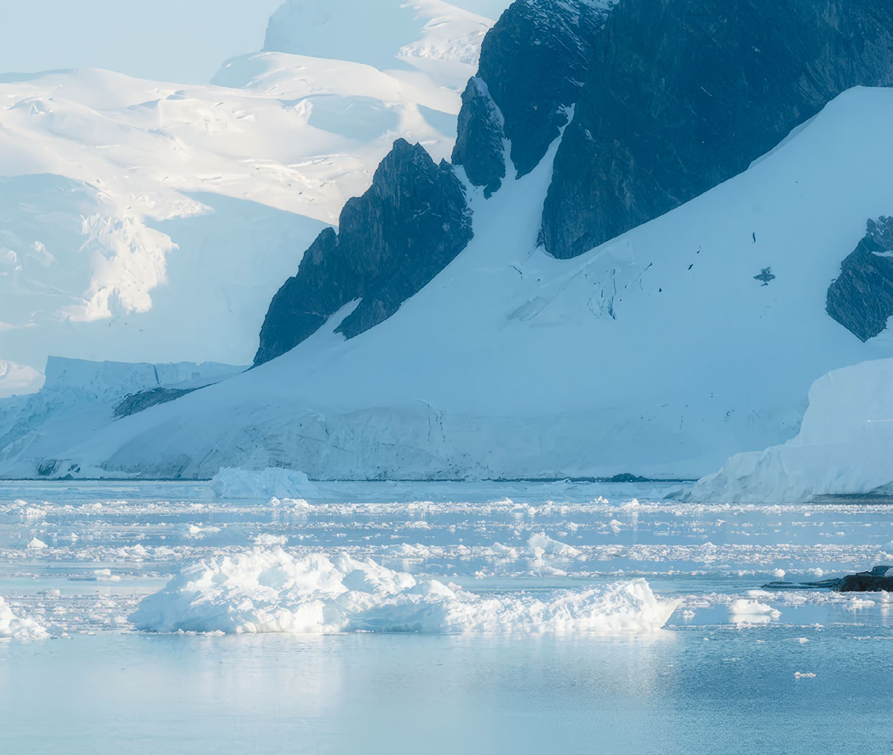
当世界越来越容易抵达，
纯粹的荒野反而成了最奢侈的礼物。
这不是一次巡航。
这是一场独家订制的家族远征，
一曲挚友共赴的静默史诗。
因为有些地方，拒绝被"参观"。
百人游轮只能远观冰川的轮廓，我们的帆船，吃水刚过三米，可悄然滑入冰山环抱的秘境港湾——那里没有码头，没有游客，只有浮冰轻叩船身的清响和午夜阳光下整片峡湾的寂静。
在帆船上，行程不由日历决定，而由风向、冰情与好奇心书写。今日或许追踪座头鲸的踪迹；明天可能登临无名小岛，在因纽特猎人曾驻足的岩壁下野餐。
帆船在浮冰中前进
她出生在德国海滨的造船厂，钢壳厚实，专为高纬度风暴与浮冰而造。
2013 年，她更名为"风之爱"，转型为人道主义医疗船，在巴布亚新几内亚的离岛，让数千例白内障岛民重见了世界。
为了深入浅水珊瑚礁区，她刻意保持轻盈吃水；为了支撑偏远地区的巡诊，她拥有超常的淡水与电力冗余。这些为"救助"而生的设计，如今成了"探索"的最大优势。
2022 年，她告别医疗使命，白帆换红，北上格陵兰。那双曾运送光明的钢骨，如今载着旅人，驶入峡湾深处的寂静。
她不是新船，但正因走过风暴、承载过生命，才懂得如何温柔地陪伴一段私属远征。
| 建造地 | 德国 | 钢制远洋船 |
| 船体材质 | 加厚钢板 | 可抗小型浮冰撞击 |
| 总吨位 | 168 GT | 国际极地航行安全标准 |
| 排水量 | 约220 吨 | 海上稳定的移动堡垒 |
| 吃水深度 | 3.5 米 | 可航行于峡湾与河口 |
| 帆装类型 | 双桅纵帆 | 侧风效率高，极地操控灵活 |
| 认证 | 北极航行资质 + 国际海事安全证书 | |
| 系统 | 强大的淡水生成 + 电力冗余系统 支持长时间无补给航行 | |
一艘被风与爱淬炼过的船
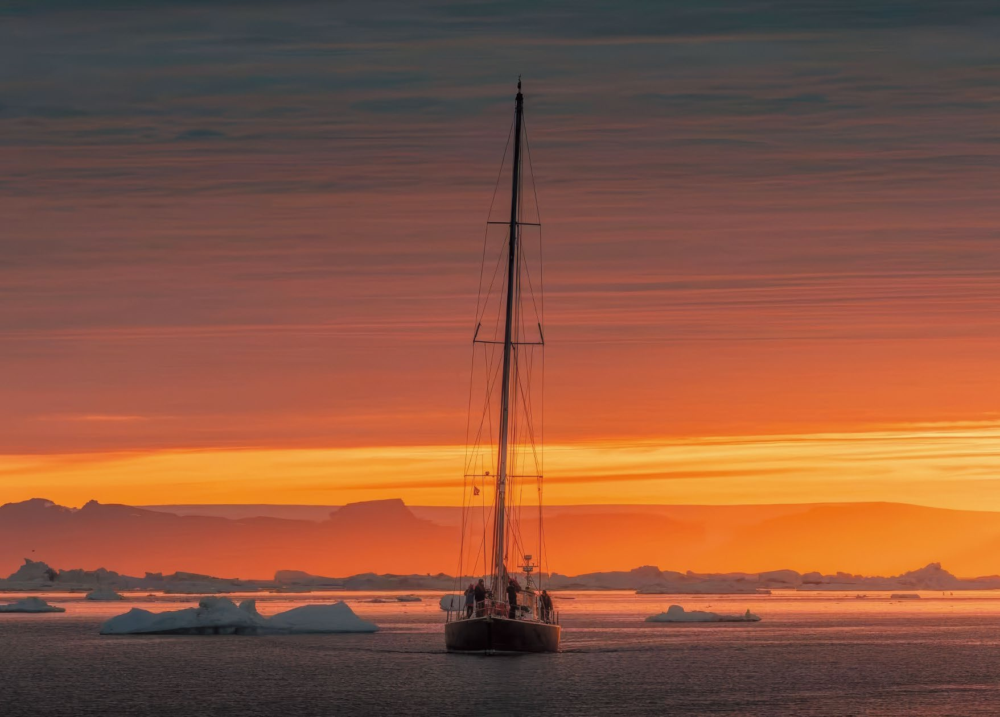
5 月下旬至8 月，格陵兰高纬度地区将没有黑夜。太阳贴着地平线滑行，仿佛拥有一个无尽的黄昏。
每一座冰山都独一无二，每一刻也都在消融。
伊卢利萨特冰川，每日入海四十米。这不是毁灭，而是循环；是地球写给海洋的，一封永不停歇的信。
七月的迪斯科湾，是鲸的夏宫。
座头鲸喷出斜斜的气柱，露脊鲸顶着白色瘤冠浮出水面，抹香鲸沉潜前，尾鳍高高扬起，如一声响亮地告别。
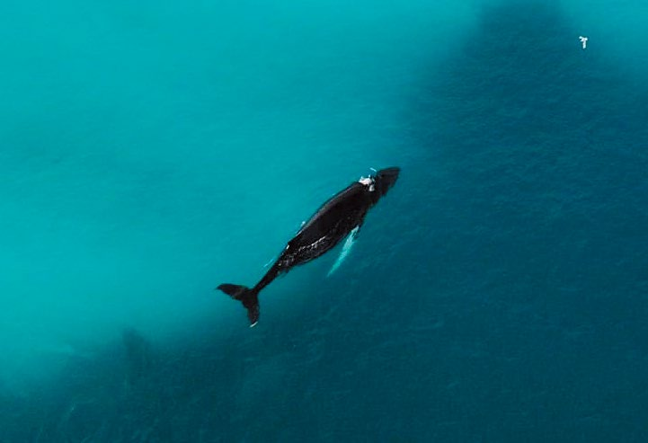
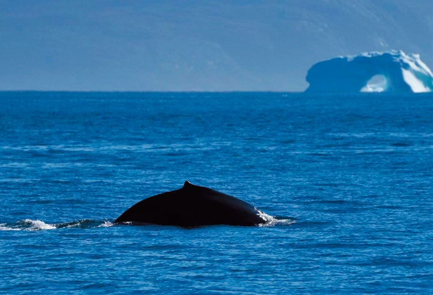
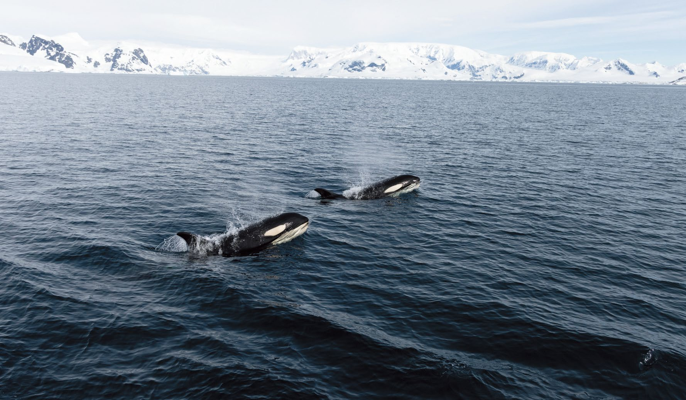
如果运气爆棚，甚至有机会遇到虎鲸
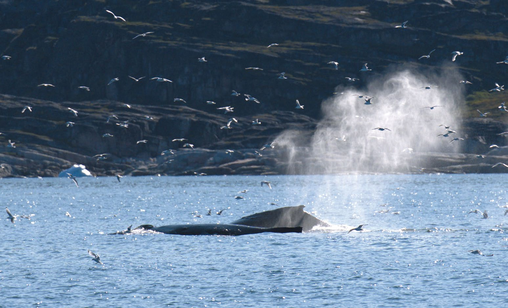
观鲸，是一门需要学习的课程。
你看到它喷出的汽柱，听到巨大的呼吸声，
然后是寂静，仿佛失去了。
你等，一分钟、两分钟、三分钟……
在浩瀚无垠的海面，追寻波浪和鸟群的蛛丝马迹，
全心全意地守候下一次相遇的可能。
然后又是巨大的一声呼吸。你的心脏也随之一跳。
然后又是寂静。又是等……
然后你慢慢习惯这个节奏。
然后你开始看出它在睡觉、在巡游、在捕食、在你周围欢快地玩耍起来。
这便是两个不同物种，相识的伊始。
在世界强权的喧嚣之外，仍有人守着自己的日子，遵循着传承千年、贴近自然的生存智慧。
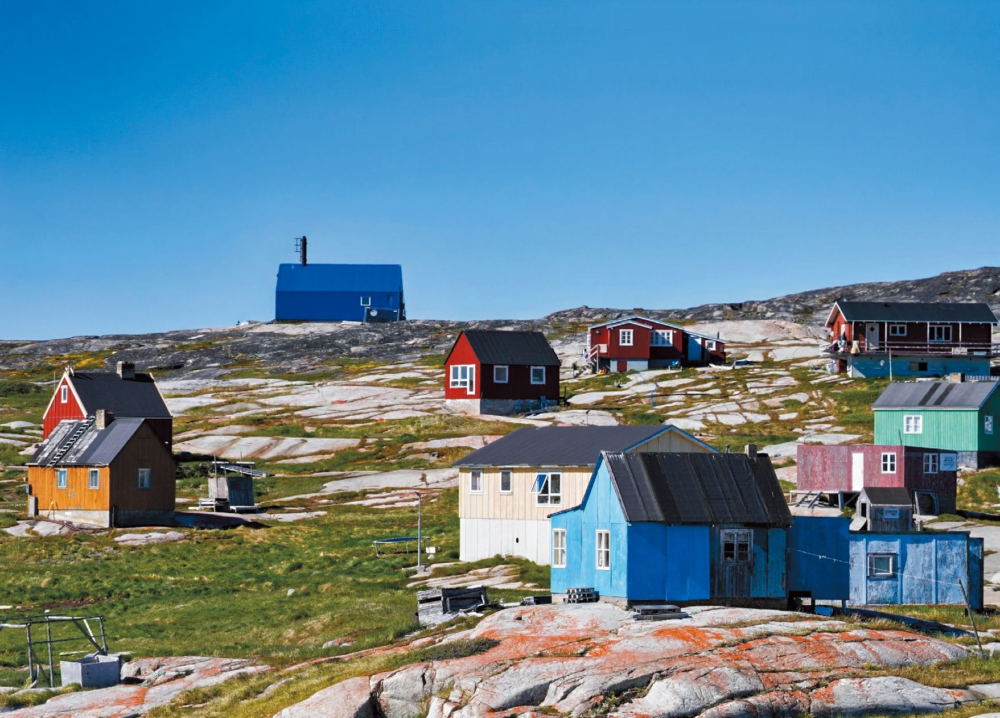
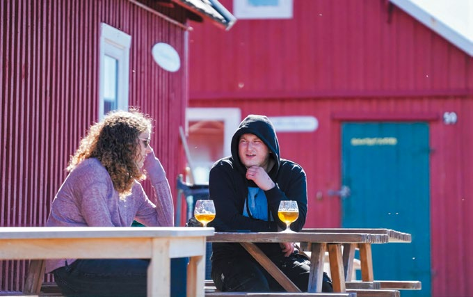
当地的年轻人
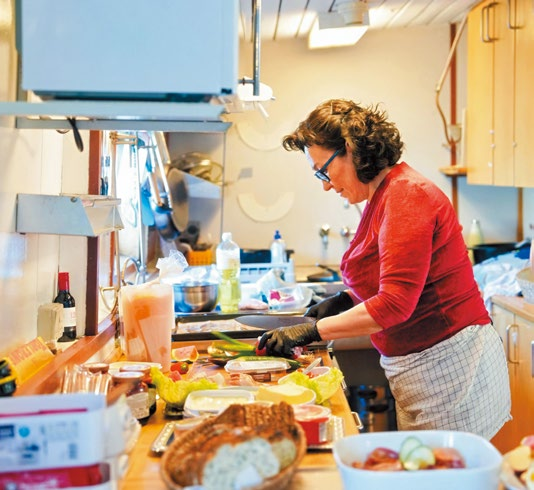
制作格陵兰美食
七月，苔原迎来短暂盛放。北极罂粟、紫虎耳草、羊胡子草……在融雪浸润的土地上，悄然铺展。

岩高兰果实的滋味，是兑了三分之一水的青苹果。在冰川、鲸群、荒野之外，我们想用一颗微酸的浆果，让你相信："格陵兰，是可以用五感活着的地方。"
两三个家庭一起邀约，在遥远的极地，给孩子们一场没有Wi-Fi 却充满星光的暑假。
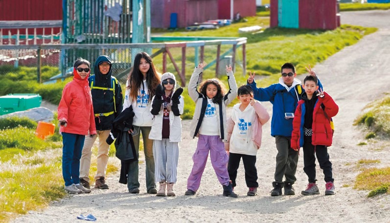
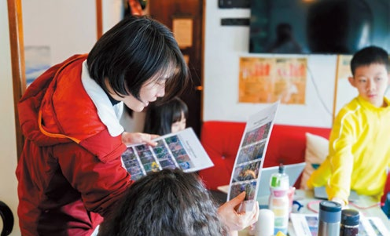
几位相识多载的好友，一起约定在世界的尽头喝一杯威士忌，看午夜的太阳沉入冰海。
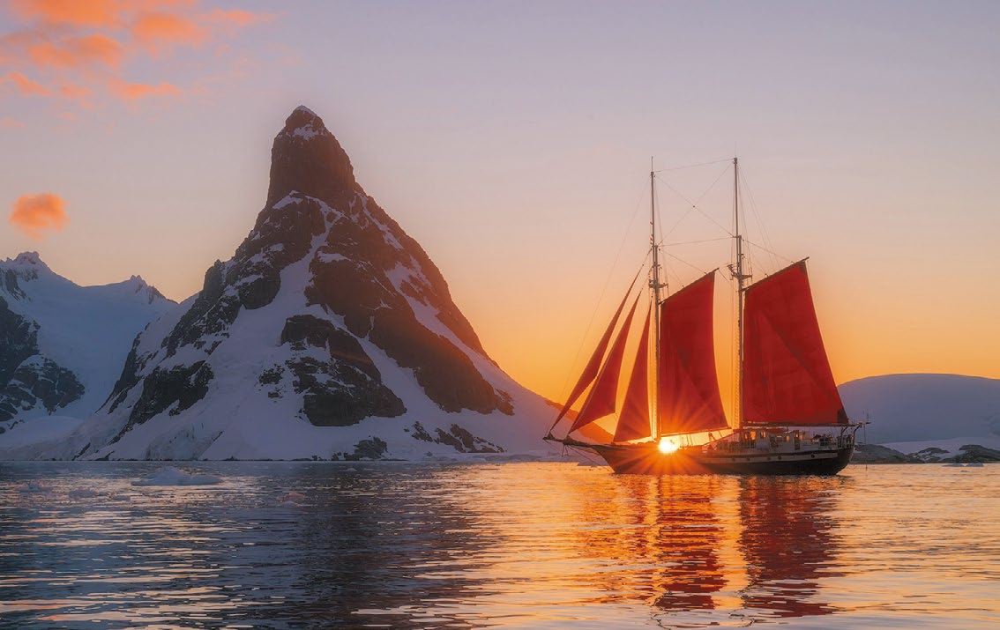
一支追求极致体验的小型团队，以冰海和荒野为舞台，共创一段不可复制的美好记忆。
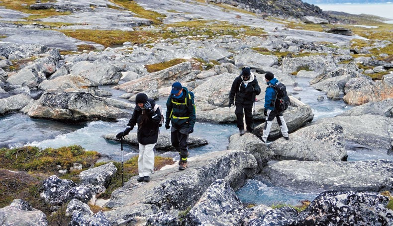
一队朋友定了婚船。
为了在冰川下拍一张特别的照片，
我从国内扛来一朵一米八的巨型玫瑰。
把它蜷在登山包里，露出花头来，
跋涉过几座小峰、几条小河，拿给他们做道具。
在北极背一朵不合时宜的玫瑰花，穿越冰原，
有点儿行为艺术。
但他们玩得很开心，玫瑰花也真的很上相。
十几年的硬核野外，
这一瞬间的感受，还是新奇的。
——很可爱。
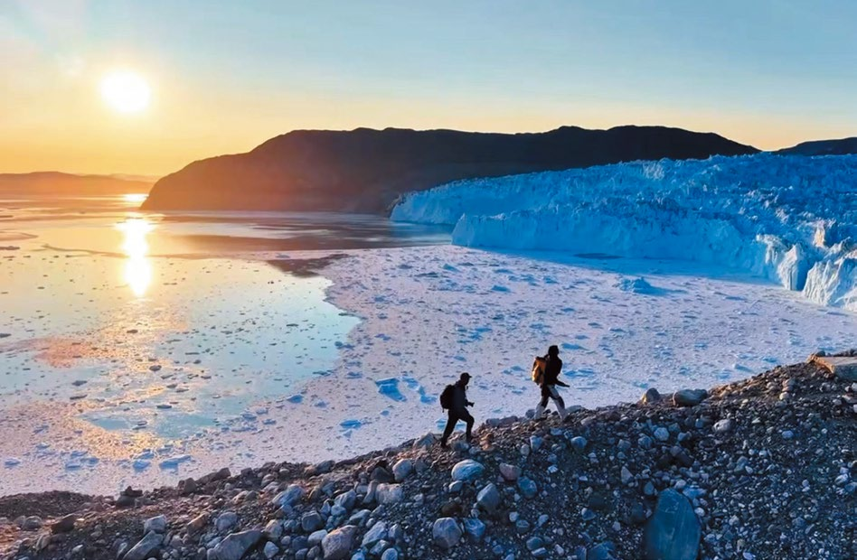
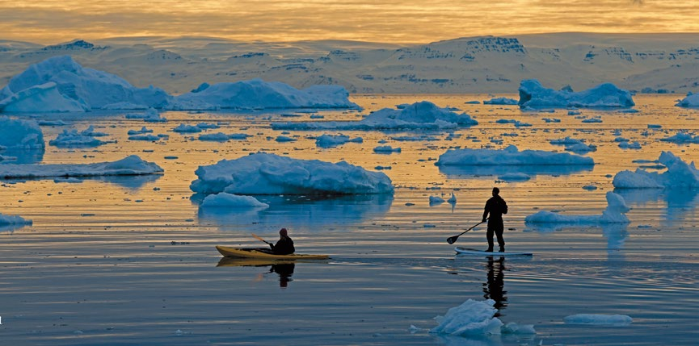


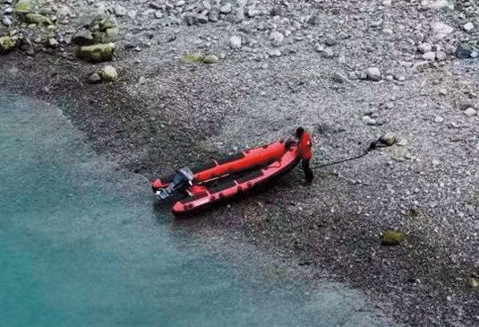
我们不做"服务"，只做"共历"
我们的船长熟悉每一道峡湾的暗流，向导能识别某只座头鲸和她的幼崽。外籍帆船厨师深谙当地的极地风味，专属的中餐主厨更懂得熨帖你的中国胃。
我们的所有航行都严格遵循丹麦海事安全规范，冲锋舟、救生装备、户外系统一应俱全。
但最坚固的保障，是团队十几年极地经验沉淀出的直觉——何时该前进，何时该等待，何时该关掉引擎，让风说话。
我们深知，帆船已是北极最温柔的抵达方式，因此更以敬畏之心，积极与当地社区合作，不留痕迹，只留故事。
接近1:1 的人员配比
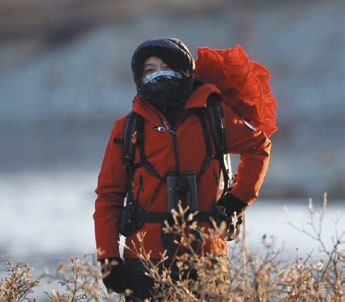
二十余年野外科研足迹遍及青藏高原、帕米尔与北极圈。曾五十余次深入南极、常驻北极三年，持冲锋舟驾驶与急救资质。译著包括《植物大发现》《荒野守望》《寂静的石头》《聆听冰川》等。
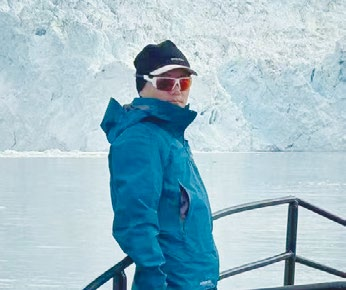
2004 至 2006 年驻守南极中山站，从事极光观测、冰芯钻取与野外搜救，获国家海洋局"优秀南极考察队员"。2016 年起专注极地探险，足迹遍及南北极点、格陵兰与斯瓦尔巴。中国极地向导联盟（CPGA）发起人。
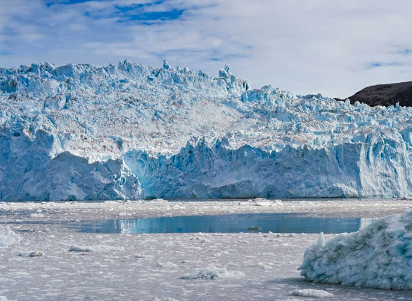
注：每日行程仅供参考，包船行程可单独定制。
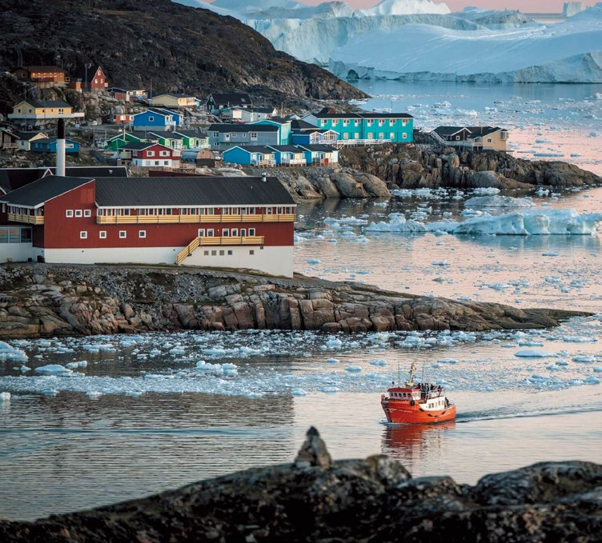
你的故事，准备好在世界尽头书写了吗？
这一程，
是一段轻拿轻放的史诗——
留给下一顿年夜饭桌上的故事……
2026 北极私属航季
WHALEBAY EXPEDITIONS